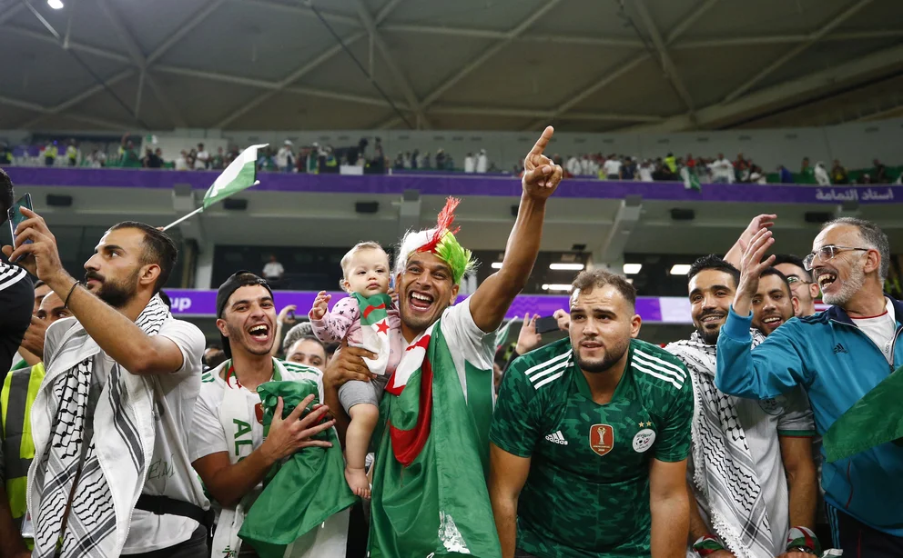

Las entradas podrán adquirirse en FIFA.com/es/tickets por orden de llegada y estarán sujetas a disponibilidad. Esta fase de venta seguirá abierta hasta que finalice la competición. Aunque ha habido una gran demanda y se espera que las nuevas localidades se agoten rápidamente, se insta a los seguidores a visitar FIFA.com/es/ticketscon regularidad, ya que se irán añadiendo lotes de entradas hasta el final del torneo.
Una oportunidad única de adquirir las entradas y participar de uno de los eventos
deportivos más
grandes del mundo.
Dos paquetes estarán disponibles para comprar:
One Stadium Super Pass: incluye todos los partidos en un estadio específico
One Stadium Flexi Pass: incluye opciones de dos o tres partidos en un estadio específico

